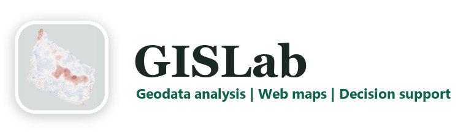
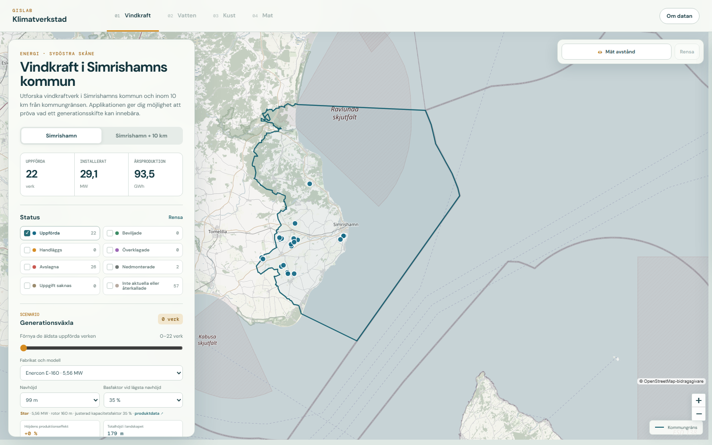
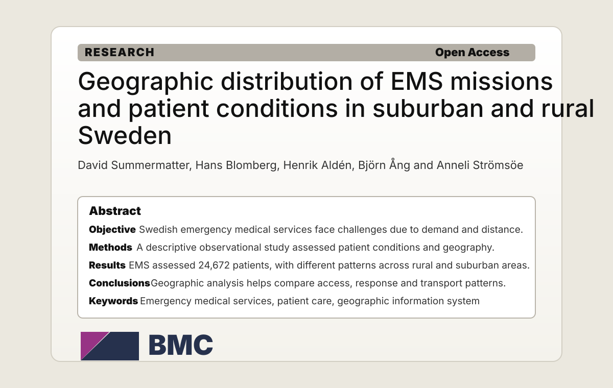
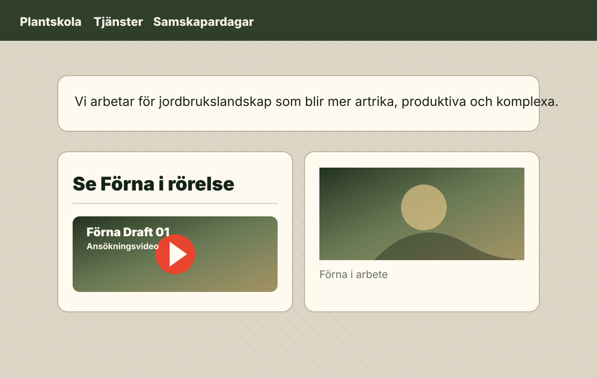

GIS analysis
Analysis, selections and heat maps
Geographic analysis, clustering, selections and map material for planning, research and presentation.

GISLab / Henrik Alden
My name is Henrik Aldén, and I work with GIS analysis, GIS development and geographic information in many forms, from data and maps to web-based decision support.


New decision tool · Climate Workshop
An interactive tool based on real wind turbines and geographic data. Compare today with a repowering scenario and explore how turbine model, hub height, landscape height and annual production change.
What we do
GISLab turns geodata into clear analysis, maps and web tools for planning, research and communication. The results are practical, traceable and built to support real decisions.
GIS analysis
Geographic analysis, clustering, selections and map material for planning, research and presentation.
GIS development
Web apps, data-driven prototypes and clear interfaces for exploring results.
Web and maps
Simple websites, web reports and web presentations where maps, text and contact routes fit together.
Decision support
Maps and summaries that make it easier to discuss energy, landscapes and public value.
Examples
These examples are already published and available to read or visit.
Decision support · Energy
Explore existing turbines and test a realistic repowering scenario using modern turbine models.
Open the tool
Research
I contributed to the geographical analysis and produced GIS analyses and heat maps for a scientific article about EMS missions in Sweden.
Read the article
Website
I created Förna's website – a practical site with a simple web shop, references and contact details.
Visit the siteFind GISLab for
Collaboration with
Contact
Send a few lines about what the project needs to understand, show or build.